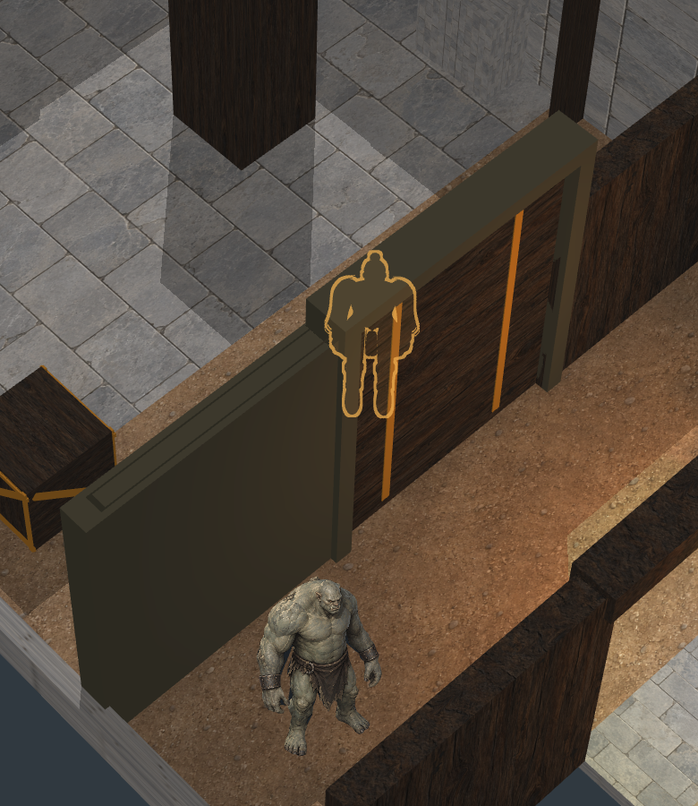
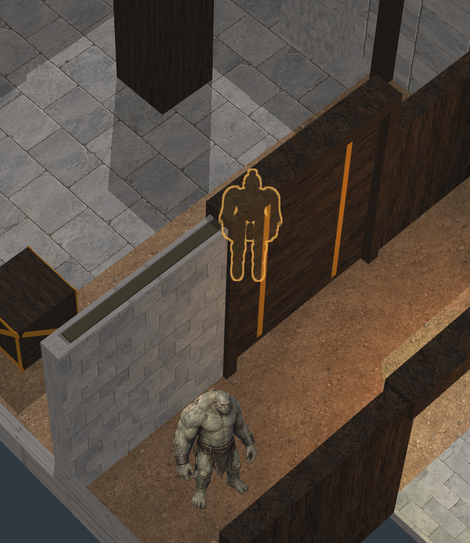
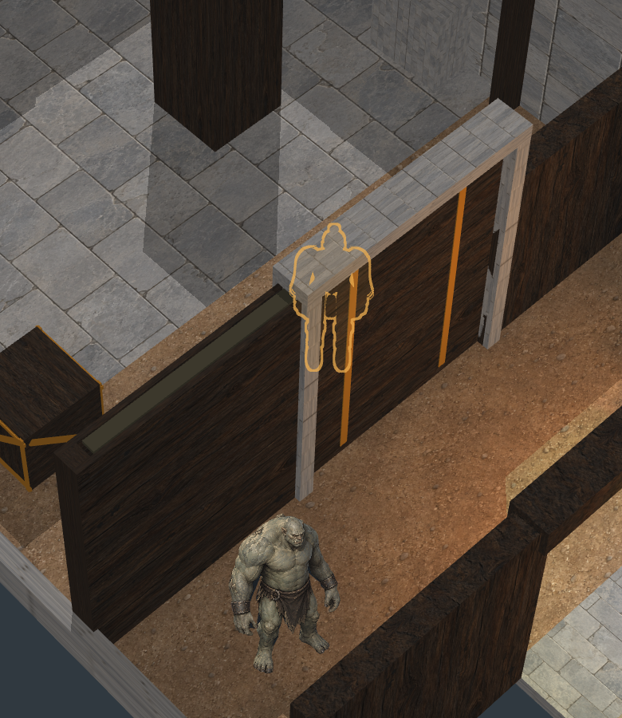

All 9,612 source geometry samples pass; complete geometry-ID images remain unchanged. Full faction/chamber art is still unqualified.
A gives the pocket readable painted construction and keeps the moving panel distinct. It uses existing paintings; geometry, light and gameplay are fixed. Fresh3× is a new high-resolution render, not an enlargement of the native image.



These are exact 780×900 physical-pixel crops from fresh renders. The amber player aid appears only where the wall occludes the player.
The two full scenes still need distinct construction/detail and stronger floor/wall light response. Next: visible practical-light fixtures and controlled glow. Godot shipping target; Pixi harness. Report · Working test (local server required)